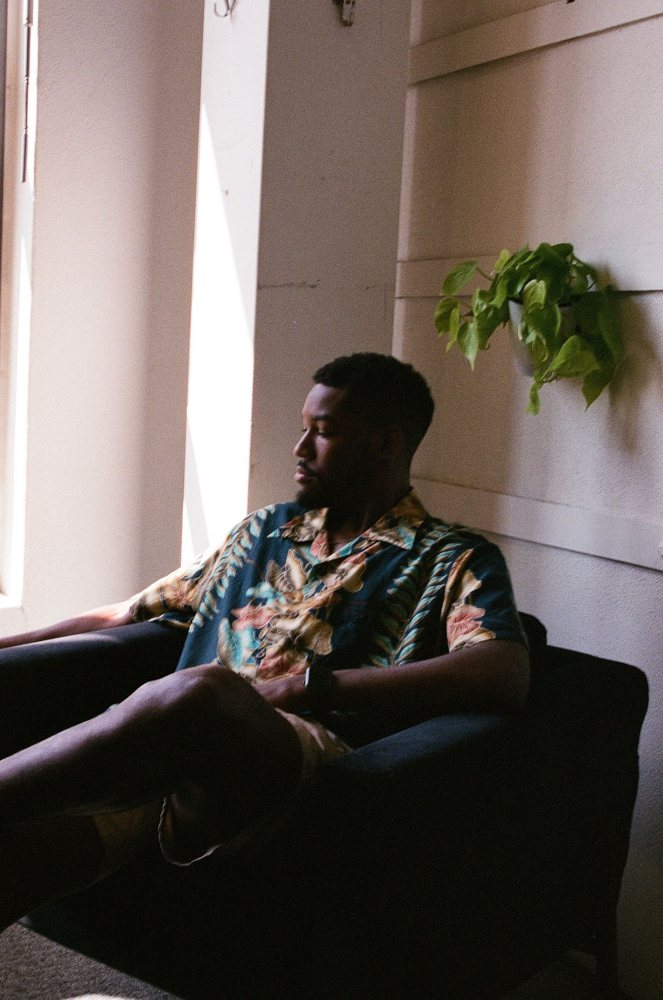

Co-founder
Joshua McKenzie German
Senior Connections Strategist at TBWA\Chiat\Day, after Goodby Silverstein & Partners and Wieden+Kennedy, on brands like Levi's, Sephora, and DIRECTV. Photographer. Started as a reporter at The Daily Gamecock.
Hosts The Eclectic Polymath and Approachable AI, plus God Is Brazilian; co-hosted Dominate the Decade.